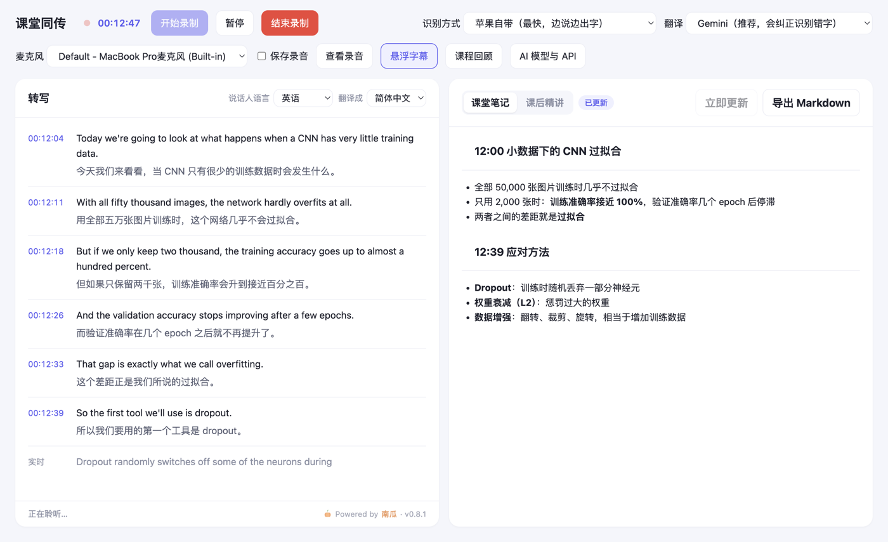
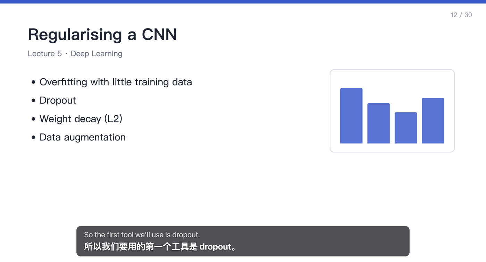

上课听不懂英文？老师说的话实时变成字幕，并翻译成中文。
一款免费的课堂同声传译软件，适合留学生上英文课、看英文网课和讲座。看 PPT 时字幕浮在最上层，下课自动整理成课后精讲。
不知道是哪种芯片？Mac：点左上角苹果图标 →「关于本机」看「芯片」；Windows：「设置 → 系统 → 系统信息」看「处理器」。

从上课听讲到下课复习，一个软件全包。
老师边说边出字，说完一句马上定稿。英语课不用注册、不用填 key 就能用。
AI 翻译会结合前几句话理解语境，语音识别听错的专业词也能按上下文纠正。
看 PPT 或网课时，字幕浮在所有窗口最上层，PPT 全屏放映也看得到。
直接识别电脑内部的声音，看 YouTube 讲座、线上课、会议都能出字幕。
点任意一句字幕，就从那一句开始回听老师的原话。录音只存在自己电脑上。
下课一键生成复习资料：章节大纲、讲解、术语表、思考题，可导出 PDF 或 Markdown。
上课过程中每隔几分钟自动整理一次要点，走神了也能马上跟上。
内置本地识别和本地翻译，装好就能用；也能接 Gemini、Claude、DeepSeek、OpenAI 或本地模型。
以前每一节课的笔记、中英对照转写和课后精讲都能随时翻看。
专业课 PPT 全屏放映，老师边翻页边讲，再也不用来回切窗口。

只要是听英语、需要中文帮忙的场景都能用。
教授语速快、专业词多，边听边看中英字幕，课后再看精讲复习。
Coursera、YouTube 公开课、学术讲座，没有中文字幕也能看懂。
线上会议、技术分享、研讨会，实时字幕加会后整理。
| 电脑 | 语音识别 | 识别电脑内部声音 |
|---|---|---|
| Mac，macOS 26 或更新 | 苹果自带、本地实时或云端 Gemini | 可以 |
| Mac，macOS 14.2 到 macOS 26 之前 | 本地实时（英语）或云端 Gemini | 可以 |
| Mac，系统更旧 | 本地实时（英语）或云端 Gemini | 不可以 |
| Windows 10 / 11 | 本地实时（英语）或云端 Gemini | 可以 |
本地识别、本地翻译和录音都只在你的电脑上，不上传。只有你选择使用 Gemini、Claude 等 AI 模型时，转写的文字才会发给你选的那家服务商。软件里没有统计、没有上传，作者也没有服务器，收不到你的任何数据。课堂录音前，请先确认学校和老师的规定。
在电脑上打开课堂同传，它会把老师说的英语实时变成字幕并翻译成中文，没听清的句子随时往回看；打开「保存录音」后还能点字幕回听原话，下课自动生成带术语表的课后精讲，方便复习。
课堂同传是免费的，支持 Mac 和 Windows。英语课不用注册、不用填 key 就能出英文字幕和中文直译；填一个免费的 Gemini key 后，翻译会结合上下文、纠正识别错字，并生成课堂笔记和课后精讲。
可以。课堂同传能直接识别电脑内部的声音，不用麦克风，看网课、YouTube 讲座、线上会议时都能实时出英文字幕和中文翻译，还可以打开悬浮字幕，让字幕浮在视频或 PPT 上面。
点「悬浮字幕」或按快捷键（Mac 上 ⌘⇧Y，Windows 上 Ctrl+Shift+Y），字幕会浮在所有窗口最上层，PPT 全屏放映时也看得到，可以拖动、拉宽、拉高显示多句。
本地识别和本地翻译只在你的电脑上处理，不上传；录音只保存在你自己的电脑上。只有你选择使用 Gemini、Claude 等 AI 模型时，转写的文字才会发给你选的那家服务商。作者收不到任何数据。
有新版时软件右下角会出现提示，点它打开下载页，下载新的安装包再装一遍就行，课堂记录和设置都会保留。
更多问题和详细说明见 GitHub 上的说明文档，遇到问题欢迎在 Issues 里反馈。